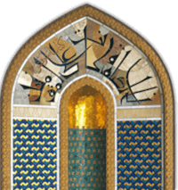

Biblioteca Viva al-Andalus, Cordoba, Spain - 2016
September 07, 2016 through September 28, 2016
The Biblioteca Viva de al-Andalus (BVA, “Living Library of Andalusia”) was created in 2002 by the Fundación Paradigma Córdoba, whose essential purpose is to remember the key role of Cordoba in the 9th to 13th centuries; the cross-fertilization of cultures of the East (China, Indian, Arabic and Persia) and West (Greco-Roman and Judeo-Christian); and the symbiosis, in Al-Andalus, of the three Abrahamic religions: Judaism, Christianity and Islam.
Due to the big success of the presentation of this exhibition in 2014, the exhibition was shown here again at this venue on request of Dr Maria Jesus Viguera, Cultural Director of the Foundation. This time the exhibition was presented in the context of a conference on historic cultural relations between Oman and Spain (ENCUENTRO CULTURAL OMÁN-ESPAÑA).
Images from the exhibition in the Biblioteca Viva al-Andalus of Cordoba, Spain - 2016 - click to enlarge image
The opening session was led by Prof. Dr. Enrique Quesada Moraga, Vice President for Innovation, Transfer and Campus of Excellence of the University of Cordoba, who welcomed the distinguished speakers, guests and visitors. Among the audience were several patrons of the Paradigma Córdoba Foundation, journalists, academics and dignitaries, including the director of the Royal Academy of Sciences and Arts of Cordoba, and the director of the Municipal Museums of Cordoba.
Prof. Dr. Quesada Moraga remarked that it is the responsibilty of the University to demonstrate the importance of culture, of the values of religious tolerance, and of collaboration on proposals for dialogue which foster actions leading to peace.
Dr. Viguera described the contents of the 24 panels of the exhibition, and emphasized that these materials convey several messages by demonstrating how various religions coexistence peacefully in the Sultanate of Oman, and that freedom of conscience in the practice of religion is guaranteed by the Basic Law of the State. She also stressed the importance of the exhibition in these times dominated by voices of conflict and confrontation.
Dr. Viguera explained the purpose of the Foundation and the Living Library of Andalusia and introduced each of the members of the speakers’ panel with a resumé of their publications and achievements and a short biography.
The following lectures were given:
- Hydraulic engineering in Al- Andalus and Oman, by Dr. Jose Roldan Cañas, Professor at the University of Cordoba.
- Stories of Omani and Spanish authors, presented by writers of the Literary Association LONG TALE: Raul Avila, Antonio Olmedo and Juan Pérez Cubillo.
- Presentation of Omani authors by Jose Ramirez del Rio, University of Córdoba.
- The Life of Omani Merchant, Scholar, and Author, Ibn Al-Thahabi, from Sohar, who settled in Spain and died in Valencia in 1064, by Dr. Humaid Al-Nofli, member of the National Commission for Education, Culture and Science, Muscat, Oman.
Please visit our Virtual Global Exhibition in your preferred language